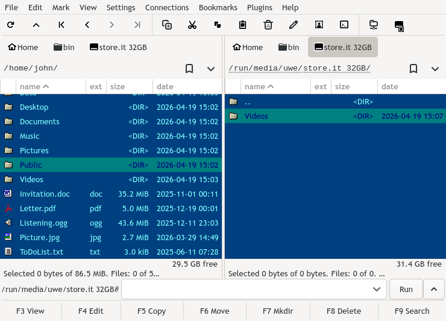

Gnome Commander is a twin-panel graphical file manager for the Linux desktop. It aims to fulfill the demands of more advanced users who like to focus on file management, their work through special applications and running smart commands.

Gnome Commander is built with Rust using GTK and GIO. This project is licensed as GPL-3.0-or-later.
Gnome Commander releases at GitLab
Gnome Commander is packaged for most Linux distributions. For installing from source, see the instructions.
Feature list
- Split panel view
- Support for tabs
- Quick search and filter
- Advanced search by file name and content
- Remote connections to SSH servers, FTP, Windows shares, WebDAV
- Internal viewer with text, hex and image view
- Command line with embedded terminal output
- Advanced rename tool supporting file meta-data
- Highly customizable keyboard shortcuts
- User defined colors for the panels
- Support for bookmarks
- Comparing directories
- and more..
Contributing
The official Git repository of Gnome Commander is registered on gitlab.gnome.org.
You can report or view Gnome Commander issues also at gitlab.gnome.org.
If you would like to get involved and don’t know where to start, have a look into the list of open feature requests.
To build Gnome Commander from source and start developing, see the instructions.
Gnome Commander is available in several languages. If you’d like to contribute translations, please contact the GNOME Translation Project.
Gnome Commander has seen many great developers and contributors since its inception and we thank them all.